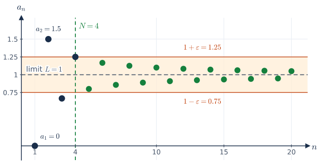
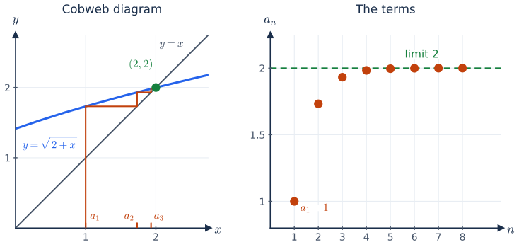
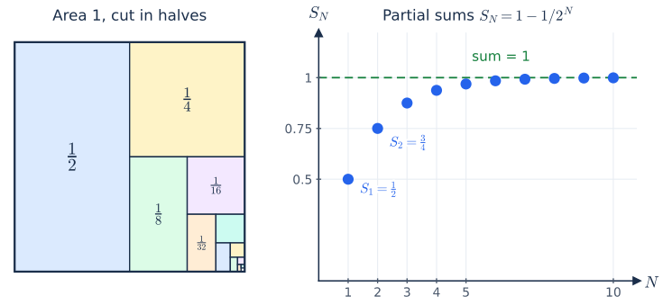
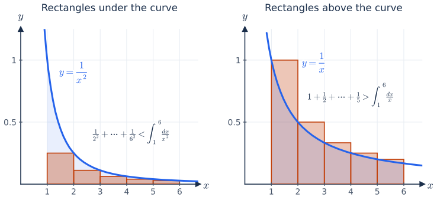
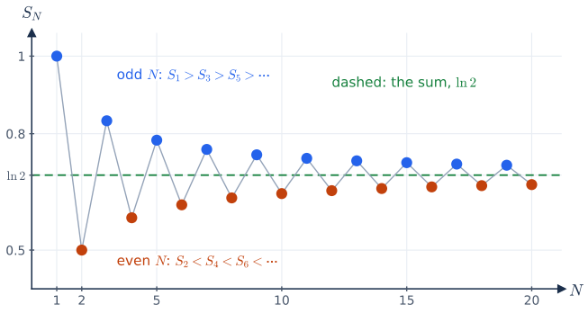

Learn when an infinite list of numbers settles down to a limit, and what it means to add up infinitely many numbers. You will sum geometric and telescoping series, see why the harmonic series diverges although its terms shrink to 0, decide convergence with a toolkit of tests, and estimate sums with a guaranteed bound on the error.
⏱ 270 minYou need: Modules 1 to 13, especially limits (Modules 2 and 3), L’Hôpital’s rule (Module 7) and improper integrals (Module 12)
In this module you will
Find limits of sequences with the limit laws, the squeeze theorem and limits of functions, and prove simple limits with ε and N
Use the Monotone Convergence Theorem to show that a sequence converges, and find the limit of a recursive sequence
Sum geometric and telescoping series, and explain why the harmonic series diverges although its terms tend to 0
Decide whether a series converges with the divergence, integral, comparison, alternating series, ratio and root tests, choosing the test by strategy
Estimate the sum of a series with a guaranteed error bound, from the integral test or the alternating series test
Tell absolute from conditional convergence, and explain what rearranging a series can do to its sum
1
Sequences
Calculus keeps producing lists of numbers that are meant to close in on something. Newton’s method for 2 gave 1,23,1217,408577,… (Module 7); interest at 100% a year, added n times a year, turned £1 into (1+n1)n pounds, for n=1,2,3,… (Module 6); the bisection method gave intervals half as long at every step (Module 3). Each is a sequence, and the question about each is the same: does it settle down to a limit? This module, which opens Part IV of the course, answers that question first. Then it turns to the one that gives Part IV its name: what does it mean to add up infinitely many numbers?
Definition 14.1Sequence
A sequence is an infinite list of numbers in a definite order,
a1,a2,a3,…,an,…
The number an, read “a sub n”, is the nthterm of the sequence, and n is its index. The whole sequence is written (an). Precisely, a sequence is a function whose domain is the set of whole numbers from some first index on, usually n≥1 and sometimes n≥0;an is its value at n.
A sequence can be given in three ways:
by a formula for the nth term: an=n1 gives 1,21,31,41,…;
by a rule that computes each term from the one before, as Newton’s method does (Section 14.2);
by a description: “2 rounded down to n decimal places” gives 1.4,1.41,1.414,1.4142,…
The graph of a sequence is not a curve but a row of dots, one above each whole number n, at height an. Figure 14.1 shows the sequence
an=1+n(−1)n:0,23,32,45,54,67,…
Its terms hop from one side of 1 to the other, and each lands closer to 1 than the one before.
The limit of a sequence
A sequence (an) has the limit L if an is as close to L as you like for every large enough n. This is the limit at infinity of Definition 3.7, with n running through the whole numbers only. Made precise in the way that Module 2 made limits of functions precise (Section 2.7), it reads:
Definition 14.2Limit of a sequence
n→∞liman=L, read “the limit of a sub n as n tends to infinity is L”, means: for every number ε>0 there is a number N such that, for every index n>N,
∣an−L∣<ε.
Then the sequence converges to L, also written an→L. A sequence that does not converge diverges. If for every number M there is an N with an>M for every n>N, the sequence diverges to infinity, written an→∞;an→−∞ is defined in the same way.
It is the game of Module 2 again. The challenger names a tolerance ε; you respond with an N, a place in the sequence after which every term lies within ε of L. Where δ said how close x must be to a,N says how far along the sequence you must go. On the graph, every dot from some index on must lie inside the band L−ε<y<L+ε.
For the sequence of Figure 14.1, ∣an−1∣=n1, which is less than ε exactly when n>ε1. So N=ε1 wins every round, and an→1. For ε=0.25 it gives N=4: every term after the fourth is inside the band.

Figure 14.1
The sequence an=1+(−1)n/n, drawn as dots. Its terms hop from one side of the limit 1 to the other, ever closer. For the challenge ε=0.25 (the orange band from 0.75 to 1.25), N=4 is a winning response: every term after the fourth (green) lies inside the band. The fourth, a4=1.25, is on its edge. A smaller ε needs a larger N.
Example 14.1An ε–N proof✓ Checked
Prove that n→∞limn+23n+1=3, and find an N for the challenge ε=0.01.
Scratch work. Put the difference over one denominator. Its numerator is 3n+1−3(n+2)=−5, and n+2>0, so
n+23n+1−3=n+2−5=n+25.
This is less than ε when n+2>5/ε, which certainly holds when n>5/ε. So try N=5/ε.
Proof. Let ε>0, and choose N=5/ε. If n>N, then n+2>5/ε, so
n+23n+1−3=n+25<ε.
Every challenge is met, so the limit is 3. For ε=0.01 the proof gives N=500: every term after the 500th is within 0.01 of 3, for instance a501=5031504≈2.99006. The smallest N that wins is 498, since n+25<0.01 exactly when n+2>500; as in Module 2, a proof needs a winning response, not the best one.
A sequence diverges when its terms never settle. The terms of (−1)n alternate between −1 and 1 for ever; the argument of Example 2.14, with the triangle inequality, shows that no number L is their limit (Exercise 14.1 has a similar sequence). The terms of n2 grow without bound: n2→∞. A sequence that diverges to infinity has no limit in the sense of Definition 14.2; writing an→∞ says how it diverges. A convergent sequence has only one limit, by the argument that follows Example 2.14 in Section 2.7. And the first terms never matter: changing, adding or removing finitely many terms changes neither whether a sequence converges nor its limit.
Watch out
A limit is about the tail of a sequence, not its first terms, and the first terms can mislead for a long time. The sequence an=n10/2n rises for its first 14 terms, to about 17.7 million at n=14, before it falls towards its limit, 0 (Theorem 7.7 of Module 7).
Limit laws and the squeeze theorem
Limits of sequences obey the same laws as limits of functions, with the same proofs (Section 2.4 and the Going deeper box of Section 2.7): N takes the place of δ, and where a proof of Module 2 takes the smaller of two δs, the proof for sequences takes the larger of two Ns.
Theorem 14.1Limit laws for sequences
Suppose that an→L and bn→M, and let c be a constant. Then
an+bncan→L+M,→cL,an−bnanbn→L−M,→LM,
and bnan→ML if M=0. If an→L and the function f is continuous at L, then f(an)→f(L).
The last law is the sequence version of Theorem 3.4: limits pass inside continuous functions. For example, 4+1/n→4+0=2, because 1/n→0 and the square root is continuous at 4.
Theorem 14.2The squeeze theorem for sequences
If bn≤an≤cn for every n from some index on, and bn→L and cn→L, then an→L. In particular, if ∣an∣→0, then an→0.
The second sentence follows from the first, since −∣an∣≤an≤∣an∣ and −∣an∣→0 by the constant multiple law. The proof of the first is that of Theorem 2.4, in the Going deeper box of Section 2.7, with N in place of δ.
The most important sequences of this module are the powers rn of a fixed number r.
Theorem 14.3Geometric sequences
For a constant r, the sequence rn, for n=0,1,2,…:
converges to 0 if −1<r<1;
converges to 1 if r=1;
diverges to infinity if r>1;
diverges, with no limit at all, if r≤−1.
Proof
For r>1, write r=1+q with q>0.Section 3.7 showed that (1+q)n≥1+nq for every n≥1, so rn exceeds any number M once n>M/q:rn→∞.
For 0<∣r∣<1, the number 1/∣r∣ is greater than 1, so (1/∣r∣)n→∞ by the first case. The reciprocal of a sequence that diverges to infinity tends to 0 (if bn>1/ε for every n>N, then 0<1/bn<ε for those n), so ∣rn∣=1/(1/∣r∣)n→0, and rn→0 by the squeeze theorem. For r=0 every term after r0=1 is 0, and for r=1 every term is 1.
For r=−1 the terms are 1,−1,1,−1,…, which have no limit. For r<−1,∣rn∣=∣r∣n→∞, so the terms are not even bounded, and a convergent sequence is bounded: from some index on its terms are within 1 of its limit, and there are only finitely many terms before that.
∎
Example 14.2Limits of sequences✓ Checked
Find the limits of
(a) 5n2+42n2−3n
(b) n(−1)n
(c) ncosn
(d) 5n3n+4n
(a) Divide the numerator and the denominator by n2, the highest power in the denominator, as for rational functions at infinity (Theorem 3.10):
5n2+42n2−3n=5+4/n22−3/n→5+02−0=52,
by the limit laws, since 1/n→0 and 1/n2→0.
(b) The terms alternate in sign, but their size ∣(−1)n/n∣=1/n tends to 0. By the squeeze theorem, (−1)n/n→0.
(c) Since −1≤cosn≤1,
−n1≤ncosn≤n1,
and both bounds tend to 0, because 1/n=1/n1/2 (Section 3.7). By the squeeze theorem, cosn/n→0.
(d) Split the fraction: 5n3n+4n=(53)n+(54)n. Both ratios lie between −1 and 1, so by Theorem 14.3 and the sum law the limit is 0+0=0.
Watch out
The power law is for a fixed power. In (1+n1)n the base tends to 1, but the exponent grows with n, and the limit is e (Theorem 6.6), not 1n=1. Expressions of the form 1∞ are indeterminate (Module 7).
Sequences from functions
Many sequences are the values of a function at the whole numbers: an=(lnn)/n is f(n) for f(x)=(lnx)/x. Then everything known about limits at infinity applies, L’Hôpital’s rule included.
Theorem 14.4Sequences from functions
If x→∞limf(x)=L and an=f(n) for every whole number n≥1, then n→∞liman=L. The same holds with ∞ or −∞ in place of L.
Proof
Let ε>0. Since f(x)→L as x→∞, there is a number N such that ∣f(x)−L∣<ε for every real number x>N: that is the precise form of Definition 3.7, given in the Going deeper box at the end of Section 3.7. In particular this holds for every whole number n>N, so ∣an−L∣<ε for those n. The proof for ±∞ is the same, with a bound M in place of the band.
∎
You cannot differentiate an with respect to n, because a sequence is defined only at whole numbers. Apply L’Hôpital’s rule to the function f(x), then Theorem 14.4.
Example 14.3Limits from functions✓ Checked
Find the limits of (a) nlnn, (b) n1/n and (c) (1+n2)n.
(a) As x→∞,(lnx)/x has the form ∞/∞, and the quotient of the derivatives is 11/x=x1→0; so (lnx)/x→0 by L’Hôpital’s rule (this is Theorem 7.6 with p=1). By Theorem 14.4, (lnn)/n→0.
(b)Example 7.18 showed that x1/x→1 as x→∞: its logarithm is (lnx)/x, which tends to 0 by (a), and e0=1. So n1/n→1; for example, 10001/1000≈1.0069.
(c)Example 7.17, with a=2, showed that (1+2/x)x→e2 as x→∞. So (1+2/n)n→e2≈7.389.
Watch out
The converse of Theorem 14.4 is false. The sequence an=sin(πn) is 0 for every whole number n, so it converges to 0; but sin(πx) has no limit as x→∞, because it keeps swinging between −1 and 1. A sequence only samples f at the whole numbers. When f(x) has no limit, decide about the sequence from the sequence itself.
2
Monotone sequences
To prove that an→L from Definition 14.2 you need to know L. Often you do not: the limit is exactly what you want to find. For one important kind of sequence there is a way to know that the limit exists before you know what it is.
Look again at 2 rounded down to n decimal places: 1,1.4,1.41,1.414,1.4142,… (starting with n=0). Each term is at least as large as the one before, and every term is below 1.5. The terms creep upwards, but they can never pass 1.5, so they must pile up somewhere at or below it. They close in on 2.
Definition 14.3Monotone and bounded sequences
A sequence (an) is increasing if an≤an+1 for every n, and decreasing if an≥an+1 for every n; it is monotone if it is one or the other. It is bounded above if there is a number M, an upper bound, with an≤M for every n;bounded below if there is a number m, a lower bound, with an≥m for every n; and bounded if it is both.
An increasing sequence may repeat a term; one with an<an+1 for every n is strictly increasing, and strictly decreasing is defined in the same way. Some books call the sequences of the definition “non-decreasing” and “non-increasing” instead. Note the difference from Module 4 and Section 8.3, where an increasing function is one that rises strictly: for sequences, this module allows equal neighbours.
The Monotone Convergence Theorem
Theorem 14.5The Monotone Convergence Theorem
An increasing sequence that is bounded above converges, and its limit is at least every term and at most every upper bound. A decreasing sequence that is bounded below converges, and its limit is at most every term and at least every lower bound.
This theorem is not proved from anything earlier in the course. It is a form of the completeness of the real numbers, the property that the number line has no gaps. Courses in real analysis either construct the real numbers and prove completeness, or take it as an axiom, a basic property from which the rest is proved. This course takes it as an axiom, and the Monotone Convergence Theorem is the form in which the course states it. The decimal approximations of 2 show why it is a property of the real numbers and not of numbers in general. Every term is a fraction, and the sequence is increasing and bounded above, yet no fraction is its limit, because 2 is irrational. Among the fractions alone, the sequence closes in on a gap, and has no limit.
The second half of each statement can be proved. Limits keep non-strict inequalities: if an≤M for every n and an→L, then L≤M. Indeed, if L were greater than M, the challenge ε=L−M would give terms with an>L−ε=M. In the same way, if an≥c for every n from some index on, then L≥c. Applied to an upper bound M, the first statement says that the limit is at most M. When the sequence increases, the terms am,am+1,… are all at least am, so the second statement, with c=am, says that the limit is at least am.
Module 3’s proof of the Intermediate Value Theorem (Section 3.3) used completeness in another form: if each of the intervals [a0,b0],[a1,b1],[a2,b2],… lies inside the one before, then some number c lies in all of them. The Monotone Convergence Theorem proves it. The left ends increase, a0≤a1≤a2≤⋯, and every right end bm is an upper bound for them: an≤bn≤bm when n≥m, and an≤am≤bm when n<m. So the an converge to a number c that is at least every an and at most every bm, and c lies in every interval, as Module 3 needed.
Key idea
The Monotone Convergence Theorem proves that a limit exists without saying what it is. That is its role. Module 3 used it to prove the Intermediate Value Theorem. Modules 6, 12 and 13 used the same property for functions (one that increases and is bounded above has a limit), to sketch why the slope of 2x at 0 exists (Section 6.1), to compare improper integrals (Section 12.8) and to explain why solutions approach a stable equilibrium (Section 13.3). Above all, the partial sums of a series with positive terms increase, so such a series converges exactly when its partial sums are bounded: every convergence test for positive terms in Sections 14.5 and 14.6 rests on this.
Going deeperCompleteness and least upper bounds
A first reading may skip this box. Courses in analysis usually state completeness as the least upper bound property: every non-empty set of real numbers that is bounded above has a least upper bound, an upper bound that is smaller than every other upper bound. The Monotone Convergence Theorem follows in a few lines. Let (an) be increasing and bounded above, and let s be the least upper bound of its terms. Let ε>0. The number s−ε is smaller than s, so it is not an upper bound: some term aN is greater than s−ε. For every n>N, then,
s−ε<aN≤an≤s,
so ∣an−s∣<ε: the sequence converges to s. Conversely, the least upper bound property can be proved from the Monotone Convergence Theorem, so either statement can serve as the axiom.
Recursive sequences
A sequence is defined recursively when its first term is given and each further term is computed from the one before by a fixed rule, an+1=g(an). Programs compute such sequences with a loop, and numerical methods such as Newton’s method are recursions. The Monotone Convergence Theorem gives a three-step method for them: show that the sequence is monotone, show that it is bounded, and only then find the limit from the rule.
Example 14.4Newton’s square root as a sequence✓ Checked
Newton’s method for 2 is the recursion x0=1,xn+1=21(xn+2/xn) (Example 7.9). Show that it converges, and find its limit, with the Monotone Convergence Theorem.
Theorem 7.2 showed that xn≥2 for every n≥1, and that the iterates decrease from x1 on: 23≥1217≥408577≥⋯. So from x1 on, the sequence is decreasing and bounded below by 2, and by the Monotone Convergence Theorem it converges to a number L≥2.
To find L, take limits on both sides of the recursion. The left side, xn+1, is the same sequence shifted by one place, so it also tends to L. On the right, L=0, so the limit laws give 21(xn+2/xn)→21(L+2/L). Therefore
L2L=21(L+L2),so=L+L2,L=L2,L2=2.
Since L≥2>0,L=2. Module 7 proved more: its formula xn+1−2=2xn(xn−2)2 shows how fast the iterates approach 2. This argument needs no such formula, and the same three steps work for many recursions that have none.
To show that every term of a recursive sequence has some property, use mathematical induction (Section 9.2): show that the first term has it (the base case), and that whenever a term an has it, so does the next term an+1 (the inductive step). Then a1 has the property, so a2 has it, so a3 has it, and so on for every n. Module 3 proved (1+q)n≥1+nq in this way.
Example 14.5A recursive sequence✓ Checked
Let a1=1 and an+1=2+an for n≥1. Show that the sequence converges, and find its limit.
The first terms, in exact form and in decimals:
an
an in decimals
2−an
1
1
1
3
1.73205
0.267949
3+2
1.93185
0.0681483
3+2+2
1.98289
0.0171103
3+2+2+2
1.99572
0.00428215
They seem to increase towards 2, and Figure 14.2 pictures how. Prove it in three steps.
Bounded. Every term is positive, since a1=1 and square roots of positive numbers are positive. And every term is below 2: a1=1<2, and if an<2, then 2+an<4, so an+1=2+an<4=2. By induction, 0<an<2 for every n.
Increasing. Compare the squares. For 0<an<2,
an+12−an2=2+an−an2=(2−an)(1+an)>0,
because both factors are positive. So an+12>an2, and since both terms are positive, an+1>an.
The limit. By the Monotone Convergence Theorem the sequence converges to a number L with 1=a1≤L≤2. The square root is continuous, so 2+an→2+L, and taking limits on both sides of the recursion gives L=2+L. Squaring, L2−L−2=0, that is, (L−2)(L+1)=0, so L=2 or L=−1. Since L≥1, the limit is 2.
The table shows how fast: after the first step, each step divides the distance to 2 by almost exactly 4. The reason is the identity 2−an+1=2+an+12−an (multiply 2−2+an above and below by 2+2+an), and 2+an+1→4.

Figure 14.2
The recursion an+1=2+an from a1=1. Left: the cobweb diagram. From the point (an,an) on the line y=x, go up to the curve y=2+x, which is at height an+1; then across to the line, at (an+1,an+1), and repeat. The steps climb towards the crossing point (2,2), where L=2+L. Right: the terms themselves increase towards the limit 2 (dashed) and never reach it.
Watch out
Solving L=g(L) is the last step, not the first. The equation says what the limit must be if there is one; it does not say that there is one. With a1=1 and an+1=2an, it gives L=2L, so L=0, yet the terms 1,2,4,8,… diverge to infinity. With a1=0 and an+1=1−an, it gives L=21, yet the terms 0,1,0,1,… have no limit. First show that the sequence converges, for instance with the Monotone Convergence Theorem.
Compute itSequences in Python and SymPy
A loop computes a recursive sequence. Here are the first terms of Example 14.5:
Python
import math
a = 1.0for n inrange(1, 9):
print(f"a_{n} = {a:.10f} 2 - a_{n} = {2 - a:.3e}")
a = math.sqrt(2 + a) # the next term
SymPy’s limit finds limits of sequences given by a formula, with sp.oo for ∞:
Python
import sympy as sp
n = sp.symbols('n')
print(sp.limit((2*n**2 - 3*n)/(5*n**2 + 4), n, sp.oo))
print(sp.limit(n**(1/n), n, sp.oo), sp.limit((1 + 2/n)**n, n, sp.oo))
print(sp.limit(sp.sin(sp.pi*n), n, sp.oo))
Output
2/5
1 exp(2)
AccumBounds(-1, 1)
The first two lines agree with Examples 14.2 and 14.3. The last shows that limit treats n as a real variable: it computes the limit of the function sin(πx), which swings between −1 and 1 for ever (AccumBounds(-1, 1), “accumulation bounds”), not of the sequence sin(πn), whose terms are all 0. Declare the symbol an integer, and SymPy simplifies the terms themselves:
Python
k = sp.symbols('k', integer=True)
print(sp.sin(sp.pi*k))
Output
0
3
Series
To walk to a door, you must first cover half the distance, then half of what is left, then half of that, and so on for ever. One of the paradoxes of motion posed by the Greek philosopher Zeno of Elea, in the 5th century BC, asks how anyone can complete infinitely many stages. As fractions of the whole distance, the stages measure 21,41,81,…, and the paradox dissolves once you can say what their total is.
Figure 14.3 shows the same total as areas. Cut a square of area 1 in half; cut the remaining half in half; cut the remaining quarter in half, and so on. After N cuts the pieces have total area
SN=21+41+⋯+2N1=1−2N1,
since the part not yet covered is the last piece cut off, of area 1/2N. As N grows, the uncovered part shrinks to 0 and SN→1: infinitely many pieces fill the square exactly.

Figure 14.3
Halving a square. Left: a square of area 1 cut into pieces of area 21,41,81,…; each piece is half of what remains, and the pieces fill the square. Right: the partial sums SN=21+41+⋯+2N1=1−2N1 climb towards 1 (dashed); the gap to 1 halves at every step.
Partial sums
Definition 14.4Series and their sums
Let (an) be a sequence. The series
n=1∑∞an=a1+a2+a3+⋯,
read “the sum of a sub n from n equals 1 to infinity”, has the partial sumsSN=a1+a2+⋯+aN, the sums of its first N terms. If the sequence of partial sums converges to a number S, the series converges, and S is its sum:
n=1∑∞an=SmeansN→∞limSN=S.
Otherwise the series diverges.
An infinite sum is a limit: you cannot add infinitely many numbers one by one, but you can add the first N and ask what happens as N grows. The sigma notation is that of Module 9, with ∞ as the upper limit. A series may start at another index, often n=0. Throughout this module, SN means the sum of the first N terms, so for ∑n=0∞an it is a0+a1+⋯+aN−1.
Every series involves two sequences: its terms an and its partial sums SN. Keep them apart. In Zeno’s series the terms 1/2n tend to 0, while the partial sums tend to 1, the sum.
Series can be added and multiplied by constants term by term, and their first terms do not decide whether they converge.
Theorem 14.6Sum laws for series
If ∑an=A and ∑bn=B converge and c is a constant, then ∑(an+bn)=A+B,∑(an−bn)=A−B and ∑can=cA. Changing, adding or removing finitely many terms of a series does not change whether it converges; if it converges, the sum changes by the total of the changes.
Proof
The partial sums of ∑(an+bn) are AN+BN, where AN and BN are those of the two series, so they tend to A+B by the sum law for sequences; the other two laws follow in the same way. If two series differ only in their first k terms, then for N≥k their partial sums differ by a fixed number d, the difference of the sums of the first k terms; so one sequence of partial sums converges exactly when the other does, and their limits differ by d. Adding or removing terms at the start shifts the index as well, which changes nothing.
∎
Watch out
There is no such law for products: ∑anbn is not (∑an)(∑bn). For an=bn=1/2n,∑anbn=∑1/4n=31, while (∑1/2n)2=1. And the sum laws need both series to converge: ∑(1−1) is 0, while ∑1 and ∑1 diverge.
Geometric series
Zeno’s series is the most important kind of series: each term is a fixed multiple of the one before.
Theorem 14.7Geometric series
Let a=0. The geometric series with first term a and ratior,
n=0∑∞arn=a+ar+ar2+ar3+⋯,
converges if ∣r∣<1, with sum
n=0∑∞arn=1−ra,
and diverges if ∣r∣≥1.
Proof
For r=1, multiply the partial sum SN=a+ar+⋯+arN−1 by r:
rSN=ar+ar2+⋯+arN.
Subtract: every term but the first of SN and the last of rSN cancels, so SN−rSN=a−arN, and
SN=1−ra(1−rN)(r=1).
If ∣r∣<1, then rN→0 (Theorem 14.3), so SN→1−ra. If r=1, then SN=Na, which diverges to ∞ or −∞. If ∣r∣≥1 and r=1, the formula gives rN=1−(1−r)SN/a; if SN converged, so would rN, by the limit laws, and Theorem 14.3 says that it does not. So the series diverges.
∎
Zeno’s series has first term a=21 (at n=1) and ratio r=21, so its sum is 1−1/21/2=1, as the square showed. In the formula, a is always the first term of the series, whatever its index.
Example 14.6Geometric series✓ Checked
Find the sum of each series, or show that it diverges:
(a) n=1∑∞3(−32)n
(b) n=0∑∞3n+14n
(a) The first term, at n=1, is 3⋅(−32)=−2, and each term is −32 times the one before. So the series is geometric with a=−2 and r=−32, and ∣r∣<1:
n=1∑∞3(−32)n=1−(−2/3)−2=5/3−2=−56.
The common slip is to take a=3, the coefficient, which gives 59: the formula needs the first term of the series, here the term with n=1.
(b)3n+14n=31(34)n, so the series is geometric with ratio r=34>1. It diverges; indeed its terms grow without bound.
Example 14.7Repeating decimals✓ Checked
Write 0.272727… and 2.3454545… as fractions.
A decimal is a sum: 0.272727…=10027+100227+100327+⋯, a geometric series with a=10027 and r=1001. Its sum is
1−1/10027/100=99/10027/100=9927=113.
For the second number, only the digits 45 repeat, from the second decimal place on:
The same reasoning gives 0.999…=1−1/109/10=1. An infinite decimal is the sum of a series, and the partial sums 0.9,0.99,0.999,… converge to 1: 0.999… and 1 are the same number, written in two ways.
Geometric series appear wherever a quantity is multiplied by the same factor again and again. In reinforcement learning, for example, a program learns to act by collecting rewards, and a reward that arrives n steps in the future is discounted by a factor γn, with 0<γ<1 (γ is the Greek letter gamma). A reward of 1 at every step is then worth ∑n=0∞γn=1−γ1 in total, which is 100 for γ=0.99.
Watch out
The formula 1−ra holds only for ∣r∣<1. Applied to 1+2+4+8+⋯ it gives 1−21=−1, absurd for a sum of positive numbers: the partial sums 2N−1 grow without bound. Check that ∣r∣<1 before you use the formula.
Telescoping series
For most series there is no formula for SN. Geometric series are one exception; telescoping series are another. Their terms are differences, an=bn−bn+1, and in the partial sums everything cancels except the two ends, like the sections of a collapsing telescope:
So the series converges exactly when bn has a limit, and then its sum is b1−limbn. The standard example is
n=1∑∞n(n+1)1,n(n+1)1=n1−n+11
(put the right side over the common denominator n(n+1) to check). Here bn=1/n, so SN=1−N+11→1.
Example 14.8Two telescoping series✓ Checked
(a) Find n=1∑∞n(n+2)1. (b) Show that n=1∑∞ln(1+n1) diverges.
(a) By partial fractions (Module 11), n(n+2)1=21(n1−n+21); check by combining the right side, 21⋅n(n+2)(n+2)−n. Now each negative part cancels with a positive part two places later:
since ln1=0. As N→∞,ln(N+1)→∞: the series diverges, although its terms tend to ln1=0.
Part (b) is a warning: terms that tend to 0 do not make a series converge. Section 14.4 meets the most famous example. Before that, experiment with partial sums.
Try it
Choose a series and watch its partial sums S1,…,SN (the dots) and its terms (the bars below). The dashed line is the sum, where theory gives it; the verdict comes from the theorems of this module, never from the dots. Start with the geometric series: set r=0.5, then r=0.9 and 0.99, and see the approach slow down as r nears 1; then try r=−0.9 (the sums zigzag), r=−1 and r=1.1. Choose the harmonic series and move N to 200: the dots rise ever more slowly, yet the verdict is “diverges” (Section 14.4). Then compare the p-series for p=2,p=1.1 and p=0.9 (Section 14.5), the alternating harmonic series (Section 14.7), ∑1/n! and ∑(−1)n.
Compute itSums with SymPy
sp.summation adds a series, finite or infinite, exactly when it can. Declaring n and N positive integers helps it:
Python
import sympy as sp
n, N = sp.symbols('n N', integer=True, positive=True)
print(sp.summation(1/(n*(n + 1)), (n, 1, N))) # the partial sum S_Nprint(sp.summation(1/(n*(n + 1)), (n, 1, sp.oo))) # the sumprint(sp.apart(1/(n*(n + 2)), n)) # partial fractionsprint(sp.summation(3*sp.Rational(-2, 3)**n, (n, 1, sp.oo)))
Output
1 - 1/(N + 1)
1
-1/(2*(n + 2)) + 1/(2*n)
-6/5
These are the telescoping sum of Section 14.3, the partial fractions of Example 14.8 (with the two fractions in SymPy’s order) and the sum of Example 14.6. For a geometric series with an unknown ratio, SymPy states the condition:
Python
r = sp.symbols('r')
print(sp.summation(r**n, (n, 0, sp.oo)))
Piecewise reads: 1−r1 if ∣r∣<1, and otherwise the sum left unevaluated, because it diverges. SymPy is not infallible, though. The series ∑1/(2n2−n) converges (compare it with ∑1/n2, Section 14.6), but:
Python
print(sp.summation(1/(2*n**2 - n), (n, 1, sp.oo)))
s = sum(1/(2*k**2 - k) for k inrange(1, 10**6 + 1)) # 10^6 termsprint(f"{s:.6f} {float(2*sp.log(2)):.6f}")
Output
nan
1.386294 1.386294
nan, “not a number”, means that SymPy has failed. The partial sum of a million terms agrees to six decimals with 2ln2, which is the true sum: partial fractions give 2n2−n1=2(2n−11−2n1), twice the terms of the alternating harmonic series of Section 14.7, taken in pairs. When a computer algebra system gives an answer you cannot check, check it another way.
4
The harmonic series and the divergence test
If a series converges, its terms must shrink to 0: otherwise each new term would keep moving the partial sums by a sizeable amount.
Theorem 14.8The terms of a convergent series tend to 0
If ∑an converges, then n→∞liman=0.
Proof
Each term is the difference of two consecutive partial sums: an=Sn−Sn−1. If SN→S, then also SN−1→S (the same sequence, shifted by one place), so an=Sn−Sn−1→S−S=0.
∎
Read the other way round, the theorem is a test.
Key idea
The divergence test. If an does not tend to 0, either because it has another limit or because it has none, then ∑an diverges. If an→0, the test says nothing: the series may converge or diverge.
Example 14.9The divergence test✓ Checked
Show that these series diverge: (a) n=1∑∞2n+1n, (b) n=0∑∞(−1)n, (c) n=1∑∞cosn1.
(a)2n+1n=2+1/n1→21=0.
(b) The terms are 1,−1,1,−1,…, which have no limit (Theorem 14.3 with r=−1). The partial sums are 1,0,1,0,…: they never settle.
(c)1/n→0 and the cosine is continuous at 0, so cos(1/n)→cos0=1=0.
In each case the terms do not tend to 0, so the series diverges.
The harmonic series diverges
Does the converse hold: if an→0, does ∑an converge? The most famous series of all says no. The harmonic series is
n=1∑∞n1=1+21+31+41+⋯
Its terms tend to 0, and its partial sums grow very slowly:
N
SN=1+21+⋯+N1
10
2.92897
100
5.18738
1000
7.48547
10000
9.78761
100000
12.0901
1000000
14.3927
A million terms add up to less than 15, and each tenfold increase in N adds only about 2.3. The numbers look as if they might level off. They do not.
Theorem 14.9The harmonic series diverges
The partial sums of ∑1/n tend to infinity.
Proof
The terms are positive, so the partial sums increase. Group the terms after the first two into blocks that end at the powers of 2:
The block that ends at 2j has 2j−1 terms, and each is at least the last one, 1/2j. So each block is at least 2j−1/2j=21: for instance 31+41≥41+41=21, and 51+61+71+81≥4⋅81=21. There are k−1 blocks, so
S2k≥1+21+(k−1)⋅21=1+2k.
Given any number M, choose k with 1+k/2>M. For every N≥2k,SN≥S2k>M, because the partial sums increase. So SN→∞.
∎
The proof shows how slowly the sums grow. It guarantees that SN is at least 10 by N=218=262,144; in fact it first passes 10 at N=12,367 (the compute box of Section 14.5 finds this). To pass 100, more than 1042 terms are needed (Section 14.5).
Watch out
The most common mistake with series is “the terms tend to 0, so the series converges”. The divergence test works in one direction only: an→0 is needed for convergence, but it is not enough. The terms 1/n tend to 0, yet ∑1/n diverges; so do ln(1+1/n) and its series (Example 14.8).
Good to know
The harmonic series holds up a famous stack of blocks. Stack n identical blocks of length 1 at the edge of a table, each block sticking out beyond the one below it: the top one by 21, the next by 41, the next by 61, and the bottom one by 2n1 beyond the edge. A computation with centres of mass (Module 12) shows that the stack balances, and the top block then reaches
21+41+⋯+2n1=21(1+21+⋯+n1)
beyond the edge of the table. Because the harmonic series diverges, the overhang can be as large as you like. Four blocks already put the top one wholly beyond the edge, since 21(1+21+31+41)=2425>1; stacked this way, an overhang of 10 lengths needs 272,400,600 blocks.
5
The integral test
The harmonic series diverges; what about ∑1/n2? Its partial sums increase too, so by the Monotone Convergence Theorem the question is whether they stay bounded. Comparing the sum with an integral answers it.
In Figure 14.4 (left), the rectangle on [n−1,n] has width 1 and height 1/n2, the value of 1/x2 at its right end. The curve decreases, so the rectangle lies under it. Adding the rectangles from n=2 to N,
221+321+⋯+N21≤∫1Nx2dx=1−N1<1.
So SN<2 for every N: the partial sums increase and are bounded above, and ∑1/n2 converges. On the right of Figure 14.4, the rectangle on [n,n+1] has height 1/n, the value of 1/x at its left end, so it lies above the curve, and
SN=1+21+⋯+N1≥∫1N+1xdx=ln(N+1)→∞:
a second proof that the harmonic series diverges.

Figure 14.4
Series and integrals. Left: the rectangles under y=1/x2 have heights 221,321,…,621, so 221+⋯+621 is less than the area under the curve from 1 to 6, which is less than 1. Right: the rectangles above y=1/x have heights 1,21,…,51, so 1+21+⋯+51 is more than the area under the curve from 1 to 6, which is ln6.
Theorem 14.10The integral test
Let f be continuous, positive and decreasing on [1,∞), and let an=f(n). Then ∑n=1∞an and ∫1∞f(x)dx both converge or both diverge. More precisely, for every N≥1,
∫1N+1f(x)dx≤SN≤f(1)+∫1Nf(x)dx.
The same holds with [k,∞) in place of [1,∞) and the series started at n=k.
Proof
Let n≥1. Since f decreases, f(n+1)≤f(x)≤f(n) for every x in [n,n+1], so, by the bounds for integrals of Module 9,
f(n+1)≤∫nn+1f(x)dx≤f(n).
Adding the right-hand inequalities for n=1,…,N gives ∫1N+1f(x)dx≤a1+⋯+aN=SN. Adding the left-hand ones for n=1,…,N−1 gives a2+⋯+aN≤∫1Nf(x)dx, which is the right-hand inequality of the theorem.
The terms are positive, so (SN) increases. If ∫1∞f(x)dx converges, to I say, then ∫1Nf(x)dx≤I, because f is positive; so SN≤f(1)+I for every N, and the series converges by the Monotone Convergence Theorem. If the integral diverges, then ∫1tf(x)dx, which increases with t, is not bounded above (an increasing function that is bounded above has a limit, Section 12.8), so it grows without bound; then SN≥∫1N+1f(x)dx→∞ and the series diverges.
∎
Each hypothesis has a job. Continuity makes the integrals exist (Module 9), and positivity makes the partial sums increase. Decreasing is what puts the rectangles on the right sides of the curve, and without it the test can give the wrong answer. For f(x)=sin2(πx)+1/x2, which is continuous and positive but not decreasing, f(n)=1/n2 for every whole number n, so the series converges; but each interval [n,n+1] contributes more than 21 to the integral, which diverges.
p-series
Theorem 14.11p-series
The p-seriesn=1∑∞np1 converges if p>1 and diverges if p≤1.
Proof
If p≤0, then 1/np=n−p≥1 for every n≥1, so the terms do not tend to 0, and the series diverges by the divergence test. If p>0, the function f(x)=1/xp is continuous, positive and decreasing on [1,∞).Theorem 12.2 showed that the p-integral∫1∞dx/xp converges exactly when p>1: for p=1,
∫1txpdx=1−pt1−p−1,
which tends to p−11 if p>1 and to ∞ if p<1, while for p=1 the integral is lnt→∞. The integral test does the rest.
∎
The p-series are the yardsticks of the next section. For p=2 the sum is known exactly,
n=1∑∞n21=6π2≈1.644934,
but its proof is beyond the scope of this module. There are such formulas for every even p, for instance ∑1/n4=π4/90, but for p=3 no formula is known; the next subsection shows how to estimate the sum.
Example 14.10The integral test on the edge✓ Checked
Decide whether (a) n=2∑∞nlnn1 and (b) n=2∑∞n(lnn)21 converge.
Both start at n=2, since ln1=0. On [2,∞),xlnx and x(lnx)2 are positive and increasing (products of positive increasing functions), so f(x)=xlnx1 and g(x)=x(lnx)21 are continuous, positive and decreasing there: the integral test applies. Substitute u=lnx,du=dx/x (Module 10).
The series in (a) diverges even more slowly than the harmonic series. By the integral test (started at n=2), the sum of its terms up to n=N is at most 2ln21+ln(lnN)−ln(ln2), so its partial sums stay below 10 for the first 103000 terms and more.
Estimating the sum
The same rectangles do more than decide. They bound the error of a partial sum. When ∑an converges to S, the remainder after N terms is
RN=S−SN=aN+1+aN+2+⋯,
the sum of the terms left out. It is the error of the approximation S≈SN: the exact value minus the approximation, as everywhere in this course.
Theorem 14.12Remainder estimate for the integral test
Under the hypotheses of the integral test, if ∑an converges, then
∫N+1∞f(x)dx≤RN≤∫N∞f(x)dx,
so the sum S satisfies
SN+∫N+1∞f(x)dx≤S≤SN+∫N∞f(x)dx.
Proof
Use the inequalities f(n+1)≤∫nn+1f(x)dx≤f(n) of the last proof on the tail. Adding the right-hand ones for n=N+1,…,M gives ∫N+1M+1f(x)dx≤aN+1+⋯+aM; adding the left-hand ones for n=N,…,M−1 gives aN+1+⋯+aM≤∫NMf(x)dx. Now let M→∞. The middle is SM−SN, which tends to RN, and limits keep non-strict inequalities (Section 14.2).
∎
Example 14.11Estimating ∑1/n2✓ Checked
Estimate ∑n=1∞1/n2 from its first 10 terms, with a guaranteed bound on the error.
The partial sum is S10=1+41+⋯+1001≈1.549768. With f(x)=1/x2,∫N∞dx/x2=1/N, so the theorem gives
1111.640677≤R10≤101,so≤S≤1.649768.
The partial sum alone is off by almost 0.1, but the interval pins S down to within 0.01. Its midpoint, S≈1.645222, has an error of size at most half the width of the interval, about 0.0045. In fact S=π2/6≈1.644934, so the true error of the midpoint, π2/6 minus the midpoint, is about −0.000288: the midpoint is slightly too large.
The difference is dramatic for high accuracy. For an error of size at most 10−6, the partial sum alone needs about a million terms, because its error RN is at least 1/(N+1). The midpoint estimate has an error of size at most half the width of the interval, 21(N1−N+11)=2N(N+1)1, which is at most 10−6 once N≥707.
How slowly?
For the harmonic series, f(x)=1/x, the inequalities of the integral test say that
ln(N+1)≤HN≤1+lnN,
where HN=1+21+⋯+N1 is the Nthharmonic number. So HN grows like lnN, and each tenfold increase of N adds about ln10≈2.303, as the table of Section 14.4 showed. To pass 100, HN needs 1+lnN≥100, that is, N≥e99≈9.9×1042. More precisely, HN−lnN decreases towards a number γ≈0.5772 called Euler’s constant; Exercise 14.11 proves that the limit exists.
Compute itHow slowly series converge
Add up the harmonic series and ∑1/n2 side by side, and compare with lnN+γ and with π2/6:
Python
import math
gamma = 0.5772156649015329# Euler's constant
H = S = 0.0
n = 0for N in [10, 100, 1000, 10**4, 10**5, 10**6]:
while n < N:
n += 1
H += 1/n # the harmonic series
S += 1/n**2# the series of 1/n^2
L = math.log(N) + gamma
print(f"N = {N:>7}: H_N = {H:9.6f} ln N + gamma = {L:9.6f}"f" pi^2/6 - S_N = {math.pi**2/6 - S:.3e}")
Output
N = 10: H_N = 2.928968 ln N + gamma = 2.879801 pi^2/6 - S_N = 9.517e-02
N = 100: H_N = 5.187378 ln N + gamma = 5.182386 pi^2/6 - S_N = 9.950e-03
N = 1000: H_N = 7.485471 ln N + gamma = 7.484971 pi^2/6 - S_N = 9.995e-04
N = 10000: H_N = 9.787606 ln N + gamma = 9.787556 pi^2/6 - S_N = 1.000e-04
N = 100000: H_N = 12.090146 ln N + gamma = 12.090141 pi^2/6 - S_N = 1.000e-05
N = 1000000: H_N = 14.392727 ln N + gamma = 14.392726 pi^2/6 - S_N = 1.000e-06
The harmonic numbers stay close to lnN+γ, ever closer. The second series converges, but its error after N terms is about 1/N, as the remainder estimate predicts: each extra correct digit costs ten times as many terms. Where does the harmonic series pass 10?
Python
H, n = 0.0, 0while H <= 10:
n += 1
H += 1/n
print(n, H)
Output
12367 10.000043008275778
The first partial sum above 10 is the 12,367th.
6
Comparison tests
Many series are not geometric, telescoping or p-series, but look like one of them: n2+11 is a little smaller than n21, and 2n−11 is close to 2n1. Comparison turns the series you know into tests for the ones you do not.
Theorem 14.13The comparison test
Suppose that 0≤an≤bn for every n from some index on.
(a) If ∑bn converges, then ∑an converges.
(b) If ∑an diverges, then ∑bn diverges.
Proof
By Theorem 14.6 the first terms do not matter, so suppose that 0≤an≤bn for every n. Let AN and BN be the partial sums of the two series. Both increase, because the terms are not negative, and AN≤BN. (a) If ∑bn converges to B, then AN≤BN≤B for every N, because an increasing sequence is at most its limit (Theorem 14.5). So (AN) is increasing and bounded above, and converges by the Monotone Convergence Theorem. (b) If ∑bn converged, then by (a) so would ∑an.
∎
Example 14.12Comparison✓ Checked
Decide whether (a) n=1∑∞2n2+4n+35 and (b) n=1∑∞nlnn converge.
(a) For n≥1,2n2+4n+3>2n2, so
0<2n2+4n+35<2n25=25⋅n21.
∑25⋅n21 converges (p=2, and the sum law), so the series converges by the comparison test.
(b) For n≥3,lnn>1, because 3>e; so nlnn>n1≥0. The harmonic series diverges, so by part (b) of the comparison test, with an=1/n and bn=(lnn)/n from n=3 on, this series diverges too: the smaller series diverges, so the larger one does.
Watch out
A comparison in the wrong direction proves nothing. n21≤n1, and ∑1/n diverges, but that says nothing about ∑1/n2, which converges. 2n−11≥2n1, and ∑1/2n converges, but that says nothing about ∑1/(2n−1). Bound a series above by a convergent one, or below by a divergent one.
Limit comparison
The second series of the pitfall does converge. Its terms are a little larger than 1/2n, so the inequality points the wrong way, but their ratio to 1/2n tends to 1, and that is enough.
Theorem 14.14The limit comparison test
Suppose that an>0 and bn>0 for every n, and that
n→∞limbnan=L,with 0<L<∞.
Then ∑an and ∑bn both converge or both diverge.
Proof
Challenge the limit with ε=L/2: there is an N such that, for every n>N,∣an/bn−L∣<L/2, that is, 2L<bnan<23L, and so
2Lbn<an<23Lbn.
If ∑bn converges, so does ∑23Lbn, and the right-hand inequality and the comparison test show that ∑an converges. If ∑bn diverges, so does ∑2Lbn, and the left-hand inequality shows that ∑an diverges.
∎
To choose bn, keep only the leading term of the top and of the bottom of an, as for rational functions at infinity.
Example 14.13Limit comparison✓ Checked
Decide whether these converge: (a) n=1∑∞2n−11, (b) n=1∑∞n5+12n2+3n, (c) n=1∑∞sinn1.
(a) Compare with bn=1/2n:
bnan=2n−12n=1−2−n1→1.
∑1/2n converges (geometric, r=21), so the series converges.
(b) The leading terms give n52n2=n1/22, so compare with bn=1/n. Divide the top and the bottom by n5/2=n2n:
bnan=n5+1(2n2+3n)n=1+1/n52+3/n→2.
∑1/n diverges (p=21), so the series diverges.
(c) For n≥1,0<1/n≤1<π, so sin(1/n)>0. Compare with bn=1/n:1/nsin(1/n)→1, by Theorem 2.5 (sinθ/θ→1 as θ→0, here with θ=1/n, through Theorem 14.4). The harmonic series diverges, so ∑sin(1/n) diverges.
Watch out
The test needs 0<L<∞. With L=0 or L=∞ it works in one direction only. If an/bn→0, then an<bn from some index on, so ∑an converges if ∑bn does, but nothing follows if ∑bn diverges; if an/bn→∞, the reverse. For instance n2lnn compared with n21 gives L=∞ and no conclusion, but compared with n3/21 it gives nlnn→0 with ∑1/n3/2 convergent, so ∑(lnn)/n2 converges.
7
Alternating series
A series whose terms alternate in sign can converge even when the sizes of its terms add up to infinity. The standard example is the alternating harmonic series
n=1∑∞n(−1)n−1=1−21+31−41+51−⋯
Its partial sums go up and down: S1=1,S2=0.5,S3≈0.833,S4≈0.583, and so on. Each step goes the other way and is shorter than the one before, so the partial sums zigzag in an ever narrower band (Figure 14.5). The table compares them with the sum, which is ln2≈0.693147:
N
SN
∣ln2−SN∣
N+11
1
1
0.306853
0.5
2
0.5
0.193147
0.333333
3
0.833333
0.140186
0.25
4
0.583333
0.109814
0.2
5
0.783333
0.0901862
0.166667
6
0.616667
0.0764805
0.142857
The error ln2−SN changes sign with every step, and its size is always smaller than the size of the first term left out, N+11 (in fact about half of it). The next theorem proves this for every series of this kind.

Figure 14.5
The partial sums of the alternating harmonic series 1−21+31−⋯. The odd ones (S1,S3,S5,…, blue) decrease, the even ones (S2,S4,S6,…, orange) increase, and every odd one lies above every even one. Both close in on the sum ln2 (dashed), which lies between any two consecutive partial sums.
Theorem 14.15The alternating series test
Let bn>0, with bn+1≤bn for every n and bn→0. Then the alternating series
n=1∑∞(−1)n−1bn=b1−b2+b3−b4+⋯
converges. Its sum S lies between any two consecutive partial sums, so
∣S−SN∣≤bN+1:
the error S−SN of the partial sum SN is no larger in size than the first term left out, and it lies between 0 and that term, (−1)NbN+1. The same holds with every sign reversed, or with the series starting at another index. If the bn decrease only from some index on, the series still converges (Theorem 14.6), and the error bound holds for the partial sums from that index on.
Proof
The even partial sums increase and are bounded above.S2m+2=S2m+(b2m+1−b2m+2)≥S2m, because b2m+2≤b2m+1. Grouping the terms differently,
because every bracket, and b2m, is at least 0. By the Monotone Convergence Theorem, S2m→S for some number S, with S2m≤S for every m.
The odd partial sums decrease towards the same limit.S2m+1=S2m−1−(b2m−b2m+1)≤S2m−1, and S2m+1=S2m+b2m+1→S+0=S. A decreasing sequence is at least its limit, so S≤S2m+1 for every m.
So SN→S. Given ε>0, the even partial sums are within ε of S beyond some index, and the odd ones beyond another; beyond the larger of the two, all of them are. Finally S2m≤S≤S2m+1 and S2m≤S≤S2m−1:S lies between SN and SN+1 for every N. Therefore ∣S−SN∣≤∣SN+1−SN∣=bN+1, and S−SN lies between 0 and SN+1−SN=(−1)NbN+1.
∎
The alternating harmonic series satisfies the hypotheses, since bn=1/n is positive, decreasing and tends to 0: it converges. Its sum is ln2, a fact stated here and proved in Module 15 with the power series of ln(1+x) (Exercise 14.11 gives another proof). The error bound shows how slowly it converges: to be sure of an error of size at most 0.001 from the bound N+11, you need N=999 terms. It converges, but not because its terms are small: their sizes 1/n add up to infinity. The cancellation between positive and negative terms does the work. Section 14.8 names this kind of convergence.
Example 14.14An alternating series estimate✓ Checked
Estimate the sum of n=0∑∞n!(−1)n=1−1+2!1−3!1+⋯ with an error of size at most 0.001.
Here bn=1/n! for n≥0. These numbers are positive; they decrease, since bn+1=n+1bn≤bn; and they tend to 0, since n!≥n, so that 0<1/n!≤1/n for n≥1. The test applies, starting at n=0.
The first term left out must be at most 0.001 in size. Since 6!1=7201≈0.00139 is too big and 7!1=50401≈0.000198 is small enough, add the terms up to n=6:
The error S−S7 is at most 50401≈0.000198 in size, and it lies between 0 and the first term left out, −50401, so the sum lies a little below S7:
0.367857≤S≤0.368056.
Module 15 shows that the sum is 1/e≈0.367879, inside the interval.
Watch out
All three hypotheses matter, and “decreasing” is the one that gets forgotten. The series
1−1+21−41+31−91+41−161+⋯,
whose terms are k1 and −k21 in turn, alternates in sign, and its terms tend to 0, but their sizes do not decrease. Its partial sum after 2K terms is (1+21+⋯+K1)−(1+41+⋯+K21), which is more than HK−2 and so tends to infinity: the series diverges.
8
Absolute convergence and the ratio and root tests
Some series have terms of both signs that do not alternate, such as
n=1∑∞n2sinn=1sin1+4sin2+9sin3+⋯,
whose terms start with three positive ones (since 1,2 and 3 lie between 0 and π) and then three negative ones (since 4,5 and 6 lie between π and 2π). The alternating series test does not apply. But the sizes of the terms are at most 1/n2, and that settles it.
Definition 14.5Absolute and conditional convergence
A series ∑anconverges absolutely if ∑∣an∣ converges. It converges conditionally if ∑an converges but ∑∣an∣ diverges.
If ∑∣an∣ converges, then ∑an converges, and ∣∑an∣≤∑∣an∣.
Proof
For every n,0≤an+∣an∣≤2∣an∣: the middle is 0 if an<0 and 2an if an≥0. The series ∑2∣an∣ converges, so ∑(an+∣an∣) converges by the comparison test, and then ∑an=∑(an+∣an∣)−∑∣an∣ converges by the sum laws. For the inequality, the triangle inequality of Module 2 gives −∑∣an∣≤SN≤∑∣an∣ for every N, and limits keep these inequalities.
∎
Example 14.15Absolute or conditional?✓ Checked
Decide how these converge: (a) n=1∑∞n2sinn, (b) n=1∑∞n2(−1)n−1, (c) n=1∑∞n(−1)n−1.
(a)n2sinn≤n21, since ∣sinn∣≤1, and ∑1/n2 converges. By the comparison test ∑∣sinn∣/n2 converges: the series converges absolutely.
(b)∑∣an∣=∑1/n2 converges: absolutely.
(c)∑∣an∣=∑1/n diverges (p=21). But bn=1/n is positive, decreasing and tends to 0, so the series converges by the alternating series test: it converges conditionally. The alternating harmonic series converges conditionally for the same reason.
Rearrangements
A finite sum gives the same total in any order. So does an absolutely convergent series: every rearrangement, the same terms taken in another order, converges to the same sum (a proof is in courses on analysis). A conditionally convergent series is different. Take the terms of the alternating harmonic series in this order: one positive term, then two negative ones,
1−21−41+31−61−81+51−101−121+⋯
Every term appears exactly once: the kth group is 2k−11−4k−21−4k1, and between them the groups use each odd denominator once and each even one once. In each group, the first two terms combine, 2k−11−4k−21=4k−21, so the sum of the first 3K terms is
half of a partial sum of the alternating harmonic series. It tends to 21ln2. The sums of 3K+1 and 3K+2 terms differ from it by at most 2K+11, which tends to 0, so the rearranged series converges to 21ln2: the same terms, half the sum.
Going deeperRiemann’s rearrangement theorem
A first reading may skip this box. The example is no accident. Riemann’s rearrangement theorem says that if ∑an converges conditionally, then for every number T some rearrangement converges to T, and other rearrangements diverge to ∞ or to −∞.
Here is the idea of the proof. Let p1,p2,… be the positive terms, in their original order, and q1,q2,… the sizes of the negative ones. Both ∑pk and ∑qk diverge. If both converged, ∑∣an∣ would converge; if one converged and the other diverged, the partial sums of ∑an would tend to ∞ or −∞. And pk→0 and qk→0, because an→0. Now take positive terms until the total first exceeds T, then negative terms until it first drops below T, then positive terms until it exceeds T again, and so on. Each stage ends after finitely many terms, because the unused ps, or qs, still add up to infinity, and every term is used sooner or later. Each time the total crosses T, it overshoots by at most the term added last, and these terms tend to 0, so the partial sums close in on T. For a sum of ∞, take positive terms until the total exceeds 1, then one negative term, then positive terms until it exceeds 2, one negative term, and so on.
Computers meet a cousin of this effect even in finite sums. Floating-point addition rounds every result, so adding the same numbers in another order can give another answer: in Python, 0.1 + 0.2 + 0.3 gives 0.6000000000000001, while 0.3 + 0.2 + 0.1 gives 0.6.
The ratio test
Comparison needs a series to compare with. For terms built from factorials and powers, such as n!/nn or n3/3n, the right series to compare with is geometric, and the ratio of consecutive terms shows which one. The Going deeper box of Section 3.8 used this idea to show that np/an→0.
Theorem 14.17The ratio test
Suppose that an=0 for every n, and that
n→∞limanan+1=ρ,
where ρ, the Greek letter rho, is a number or ∞.
If ρ<1, the series ∑an converges absolutely.
If ρ>1 or ρ=∞, the series diverges.
If ρ=1, the test gives no conclusion.
Proof
Suppose that ρ<1, and choose a number r with ρ<r<1, for instance r=21(ρ+1). Since the ratios tend to ρ, there is an index k with ∣an+1∣≤r∣an∣ for every n≥k. Then ∣ak+1∣≤r∣ak∣,∣ak+2∣≤r2∣ak∣, and in general ∣ak+j∣≤∣ak∣rj. The geometric series ∑j∣ak∣rj converges, because 0<r<1, so ∑∣an∣ converges by the comparison test.
Suppose that ρ>1 or ρ=∞. Then there is an index k with ∣an+1∣>∣an∣ for every n≥k, so from ak on the sizes of the terms increase, and they stay at least ∣ak∣>0. The terms do not tend to 0, and the series diverges by the divergence test.
For ρ=1, here are two series, one convergent and one divergent, that both have ρ=1. For ∑1/n, the ratio is n+1n→1; for ∑1/n2, it is (n+1)2n2→1.
∎
The ratio test suits factorials and exponentials. For ∑1/n!, the ratio is (n+1)!n!=n+11→0, so the series converges; Module 15 shows that ∑n=0∞1/n!=e. The test is useless for p-series and for terms built from powers of n, which always give ρ=1: use comparison for those.
Example 14.16The ratio test✓ Checked
Decide whether these converge: (a) n=1∑∞2nn, (b) n=1∑∞nnn!, (c) n=1∑∞n23n.
The series diverges; indeed its terms grow without bound.
Watch out
The ratio test needs the limit of the ratios; ratios below 1 are not enough. For the harmonic series, anan+1=n+1n<1 for every n, yet the series diverges: the ratios creep up towards 1, and no fixed r<1 bounds them. And ρ=1 means “no conclusion”, not “diverges”: ∑1/n2 has ρ=1 and converges.
The root test
For terms that are nth powers, such as (2n+1n)n, the nth root removes the power.
Theorem 14.18The root test
Suppose that n→∞lim∣an∣1/n=ρ, a number or ∞. If ρ<1, the series ∑an converges absolutely; if ρ>1 or ρ=∞, it diverges; if ρ=1, the test gives no conclusion.
Proof
If ρ<1, choose r with ρ<r<1. From some index on, ∣an∣1/n<r, that is, ∣an∣<rn, and ∑rn converges: compare. If ρ>1 or ρ=∞, then from some index on ∣an∣1/n>1, so ∣an∣>1, and the terms do not tend to 0. For ρ=1: both ∑1/n and ∑1/n2 have ρ=1, since n1/n→1 (Example 14.3), so that (1/n)1/n=1/n1/n→1 and (1/n2)1/n=1/(n1/n)2→1.
∎
For example, for n=1∑∞(2n+1n)n,∣an∣1/n=2n+1n=2+1/n1→21<1: the series converges.
9
A strategy for testing series
No single test decides every series, and a test whose hypotheses fail tells you nothing. Faced with a series ∑an, ask these questions in order:
Do the terms tend to 0? If not, the series diverges (the divergence test). If they do, carry on: this proves nothing yet.
Is it a series you know? A geometric series ∑arn converges exactly when ∣r∣<1, and a p-series∑1/np exactly when p>1. Is it telescoping?
Positive terms built from powers of n, such as rational functions and roots: compare, usually by limit comparison with the p-series given by the leading terms.
Factorials, or exponentials such as 2n: the ratio test. A whole expression raised to the power n: the root test.
Terms f(n) with an f you can integrate, such as nlnn1: the integral test, after checking that f is continuous, positive and decreasing.
Signs that alternate: first test ∑∣an∣ with steps 2 to 5. If it converges, the series converges absolutely; if not, try the alternating series test, which may show conditional convergence.
Other mixed signs: test ∑∣an∣.
The hypotheses need to hold only from some index on, since the first terms never decide convergence (Theorem 14.6). The error bounds of Sections 14.5 and 14.7 then hold for the partial sums from that index on.
Example 14.17Choosing a test✓ Checked
Decide whether each series converges, and say which test shows it.
(a) n=1∑∞3n2−nn2+1
(b) n=1∑∞n3+23n+1
(c) n=1∑∞3nn3
(d) n=1∑∞n2+1(−1)nn
(e) n=1∑∞(3n+12n)n
(f) n=2∑∞nlnn1
(a) Step 1: 3n2−nn2+1=3−1/n1+1/n2→31=0. The series diverges by the divergence test.
(b) Step 3. The leading terms give n33n=n23, so compare with n21:1/n2an=n3+23n3+n2=1+2/n33+1/n→3. The series converges by limit comparison with the p-series for p=2.
(c) Step 4, an exponential: anan+1=3n+1(n+1)3⋅n33n=31(1+n1)3→31<1. It converges by the ratio test.
(d) Step 6. ∣an∣=n2+1n, and 1/nn/(n2+1)=n2+1n2→1, so ∑∣an∣ diverges by limit comparison with the harmonic series: no absolute convergence. Now the alternating series test, with bn=n2+1n, which is positive and tends to 0. It decreases: bn+1≤bn means (n+1)(n2+1)≤n((n+1)2+1), that is, n3+n2+n+1≤n3+2n2+2n, that is, 1≤n2+n, which is true for n≥1. So the series converges conditionally. (Its signs start with a minus, −b1+b2−⋯; Theorem 14.15 allows every sign reversed.)
(e) Step 4, an nth power: ∣an∣1/n=3n+12n→32<1. It converges by the root test.
(f) Step 5. f(x)=xlnx1 is continuous, positive and decreasing on [2,∞), because xlnx is positive and increasing there. With u=lnx,
∫2txlnxdx=∫ln2lntudu=2lnt−2ln2→∞,
so the series diverges by the integral test.
Deciding whether a series converges is one question; finding its sum is another, and usually harder. Most convergent series, such as ∑1/n3, have no known formula for their sum. Then estimate the sum with a guaranteed bound on the error: the integral test for positive decreasing terms (Section 14.5), the alternating series bound (Section 14.7), or a comparison of the remainder with a geometric series (Exercise 14.10 shows how). Module 15 turns to series whose terms contain a variable x, the power series, which represent functions such as ex and sinx, and proves the sums ln2 and e that this module has quoted.
10
What you learned
A sequence (an) converges to L if for every ε>0 there is an N with ∣an−L∣<ε for every n>N. The limit laws, the squeeze theorem and limits of functions (an=f(n), with L’Hôpital’s rule applied to f) compute limits. The powers rn tend to 0 exactly when ∣r∣<1.
The Monotone Convergence Theorem, a form of the completeness of the real numbers: an increasing sequence that is bounded above converges, and so does a decreasing sequence that is bounded below. For a recursion an+1=g(an): show that the sequence is monotone and bounded (often by induction), and only then solve L=g(L).
A series∑an converges when its partial sums SN converge, and its sum is their limit. The geometric series ∑n=0∞arn has sum 1−ra when ∣r∣<1 and diverges otherwise; a telescoping series has SN=b1−bN+1.
If ∑an converges, then an→0, so terms that do not tend to 0 mean divergence. The converse is false: the harmonic series∑1/n diverges, though its partial sums grow only like lnN.
Integral test (f continuous, positive and decreasing): ∑f(n) and ∫1∞f(x)dx converge or diverge together, and ∫N+1∞f(x)dx≤RN≤∫N∞f(x)dx. The p-series∑1/np converges exactly when p>1;∑1/n2=π2/6.
Comparison (0≤an≤bn) and limit comparison (an/bn→L with 0<L<∞) measure a series against one you know.
Alternating series test (bn positive, decreasing, tending to 0): ∑(−1)n−1bn converges, and ∣S−SN∣≤bN+1. The alternating harmonic series converges to ln2, but only conditionally; rearranging it can change its sum.
Absolute convergence implies convergence. The ratio and root tests: ρ<1 means absolute convergence, ρ>1 divergence, and ρ=1 no conclusion.
Strategy: the divergence test first; then known series; comparison for powers of n; the ratio test for factorials and exponentials, the root test for nth powers; the integral test for functions you can integrate; absolute convergence before the alternating series test.
11
Exercises
Exercise 14.1★Limits of sequences
Find the limit of each sequence, or show that it diverges.
(a) an=2n2+54n2−n
(b) an=n+1(−1)nn
(c) an=(1+n3)n
(d) an=n+1−n
Show solution✓ Checked
(a) Divide the numerator and the denominator by n2:an=2+5/n24−1/n→24=2.
(b) The size of the terms, n+1n=1+1/n1, tends to 1, while the sign alternates. For n≥2,n+1n≥32, so every term with an even index is at least 32, and every term with an odd index from n=3 on is at most −32. Suppose the sequence had a limit L, and challenge it with ε=32. Beyond any N there is an even index p and an odd index q, and then, by the triangle inequality,
34≤∣ap−aq∣≤∣ap−L∣+∣L−aq∣,
so ap and aq cannot both lie within 32 of L. No N answers the challenge, so no number is the limit: the sequence diverges.
(c) By Theorem 6.6 with x=3,an→e3≈20.09. The answer 1, from “the base tends to 1”, is the pitfall of Section 14.1: the exponent grows too.
(d) The form is ∞−∞, which decides nothing; rationalise, as in Module 2. Multiply and divide by n+1+n:
an=n+1+n(n+1)−n=n+1+n1.
The denominator is more than 2n, so 0<an<2n1, and 2n1→0. By the squeeze theorem, an→0.
Exercise 14.2★Geometric series
(a) Find n=2∑∞(43)n.
(b) Find n=0∑∞5n2n+1.
(c) Write 0.181818… and 0.4999… as fractions.
(d) A ball is dropped from a height of 2 metres, and after each bounce it rises to 43 of the height it fell from (the numbers are hypothetical). What total distance does it travel?
Show solution✓ Checked
(a) The first term, at n=2, is 169, and r=43: the sum is 1−3/49/16=1/49/16=49.
(b)5n2n+1=2(52)n, a geometric series with a=2 and r=52: the sum is 1−2/52=3/52=310.
(c)0.181818…=10018+100218+⋯=1−1/10018/100=9918=112. And
(d) The ball falls 2 m. Then it rises 1.5 m and falls 1.5 m, rises 1.125 m and falls 1.125 m, and so on: each height after the first is travelled twice. The heights 1.5,1.125,… form a geometric series with a=1.5 and r=43, so the total distance is
2+2⋅1−3/41.5=2+2⋅6=14 metres.
The tempting 1−3/42=8 m counts each height only once.
Exercise 14.3★Quick decisions
Decide whether each series converges or diverges, with a one-line reason.
(a) n=1∑∞3n+2n
(b) n=1∑∞n1.011
(c) n=1∑∞n1
(d) n=0∑∞(πe)n
(e) n=1∑∞(−1)n
Show solution✓ Checked
(a) The terms tend to 31=0: the series diverges by the divergence test.
(b) A p-series with p=1.01>1: it converges.
(c) A p-series with p=21≤1: it diverges, although its terms tend to 0 (the divergence test says nothing here).
(d) A geometric series with ratio r=e/π≈0.865, and ∣r∣<1: it converges, to 1−e/π1=π−eπ≈7.42.
(e) The terms −1,1,−1,… do not tend to 0 (they have no limit): it diverges.
Exercise 14.4★Telescoping series
(a) Show that n2−12=n−11−n+11 for n≥2, and find n=2∑∞n2−12.
(b) Find n=1∑∞(n1−n+11).
Show solution✓ Checked
(a) Over the common denominator (n−1)(n+1)=n2−1, the right side is n2−1(n+1)−(n−1)=n2−12. Each negative part cancels with a positive part two places later, so the sum of the terms from n=2 to n=N is
which tends to 23. The sum is 23. Do not split the series into ∑n−11−∑n+11: both of those diverge, and the sum laws apply only to convergent series.
(b) It telescopes, with bn=1/n:SN=1−N+11→1. The sum is 1, although ∑1/n itself diverges.
Exercise 14.5★★An ε–N proof
(a) Prove from Definition 14.2 that n→∞limn+42n−1=2.
(b) Find the smallest whole number N that answers the challenge ε=0.001: every term after the Nth is less than 0.001 from 2.
Show solution✓ Checked
(a)Scratch work.n+42n−1−2=n+42n−1−2(n+4)=n+49, since the numerator is −9 and n+4>0. This is less than ε when n+4>9/ε, so N=9/ε will do.
Proof. Let ε>0 and N=9/ε. For every n>N,n+4>9/ε, so n+42n−1−2=n+49<ε. Every challenge is met, and the limit is 2.
(b)n+49<0.001 exactly when n+4>9000, that is, when n>8996. So N=8996 works: every term from the 8997th on is within 0.001 of 2. No smaller N does, because the 8996th term is exactly 0.001 from 2: 90009=0.001, which is not less than 0.001.
Exercise 14.6★★A recursive sequence
Let a1=1.5 and an+1=3an2+2.
(a) Compute a2 and a3.
(b) Show that 1<an<2 for every n, and that the sequence is decreasing.
(c) Find its limit.
(d) What happens if instead a1=3?
Show solution✓ Checked
(a)a2=32.25+2=1217≈1.4167, and a3=3(17/12)2+2=432577≈1.3356.
(b) By induction. a1=1.5 lies between 1 and 2. If 1<an<2, then 1<an2<4, so 3<an2+2<6 and 1<an+1<2. So 1<an<2 for every n. Next,
an+1−an=3an2−3an+2=3(an−1)(an−2)<0,
because an−1>0 and an−2<0. So the sequence decreases.
(c) It is decreasing and bounded below by 1, so it converges by the Monotone Convergence Theorem, to a number L with 1≤L≤a1=1.5. Taking limits on both sides of the recursion, L=3L2+2, so L2−3L+2=0, that is, (L−1)(L−2)=0. Since L≤1.5,L=1.
(d) Now a2=311>a1. If an>2, then an+1−an=31(an−1)(an−2)>0, so an+1>an>2: by induction, the sequence increases and stays above 2. If it converged, its limit would be at least a1=3 and would solve L2−3L+2=0, whose only solutions are 1 and 2: impossible. So it diverges; being increasing, it is not bounded above (otherwise the Monotone Convergence Theorem would make it converge), so it diverges to infinity. The equation L=g(L) gives the candidates 1 and 2, but neither is the limit: this is the pitfall of Section 14.2.
Exercise 14.7★★Estimating ∑1/n3
(a) Show with the integral test that ∑n=1∞1/n3 converges.
(b) Use S5 and the remainder estimate to find an interval that contains the sum.
(c) How many terms N make sure that SN alone is within 0.0005 of the sum?
Show solution✓ Checked
(a)f(x)=1/x3 is continuous, positive and decreasing on [1,∞), and ∫1∞x3dx=t→∞lim[−2x21]1t=21 converges (a p-integral with p=3). So the series converges.
(b)S5=1+81+271+641+1251≈1.185662. In general ∫N∞x3dx=2N21, so ∫6∞=721≈0.013889 and ∫5∞=501=0.02. The remainder estimate gives
1.199551≤S≤1.205662.
(The sum is about 1.202057, and no formula for it is known.)
(c)RN≤∫N∞x3dx=2N21, and 2N21≤0.0005 exactly when N2≥1000. Since 312=961 and 322=1024,N=32 terms suffice.
Exercise 14.8★★Comparison tests
Decide whether each series converges, and name the test.
(a) n=1∑∞n3+2nn+4
(b) n=1∑∞n22+sinn
(c) n=1∑∞3n−2n1
(d) n=1∑∞n+2n+1
Show solution✓ Checked
(a) The leading terms give n3n=n21. Limit comparison with bn=1/n2:bnan=n3+2nn3+4n2=1+2/n21+4/n→1. Since ∑1/n2 converges, so does the series.
(b)−1≤sinn≤1, so 0<n22+sinn≤n23. Since ∑3/n2 converges, the series converges by the comparison test.
(c) Compare with bn=1/3n (note 3n−2n>0):bnan=3n−2n3n=1−(2/3)n1→1. The geometric series ∑1/3n converges, so the series converges by limit comparison. A direct comparison with 1/3n would point the wrong way, since 3n−2n1>3n1.
(d) The leading terms give nn=n1. Limit comparison with bn=1/n:bnan=n+2(n+1)n=n+2n+n→1. Since ∑1/n diverges, so does the series.
Exercise 14.9★★An alternating series
Let S=n=1∑∞n2n(−1)n−1=21−81+241−⋯
(a) Show that the series converges.
(b) How many terms guarantee an error of size less than 0.001? Compute that partial sum, and give an interval that contains S.
(c) Module 15 shows that S=ln23. Is it in your interval?
Show solution✓ Checked
(a)bn=n2n1 is positive; it decreases, because n2n increases with n; and it tends to 0. By the alternating series test the series converges. (It even converges absolutely, since bn≤1/2n.)
(b) The first term left out must be less than 0.001 in size, that is, (N+1)2N+1>1000. For N+1=7,7⋅128=896 is too small; for N+1=8,8⋅256=2048 is enough. So 7 terms:
The error S−S7 is at most b8=20481≈0.000488 in size, and it lies between 0 and the first term left out, −20481. So
0.405315≤S≤0.405804.
(c)ln1.5≈0.405465 lies in the interval. The error of S7 is ln1.5−S7≈−0.000338: negative, like the first term left out, and smaller in size than the bound.
Exercise 14.10★★The ratio and root tests, and a geometric bound
(a) Decide whether n=1∑∞10nn! converges.
(b) Decide whether n=1∑∞(n+1n)n2 converges.
(c) What does the ratio test say about n=1∑∞n2+11? Does the series converge?
(d) For n=1∑∞2nn (Example 14.16), show that anan+1≤116 for every n≥11, and deduce that R10≤1−6/11a11. Compare with the true remainder R10=2−S10=2563.
Show solution✓ Checked
(a) Ratio test: anan+1=10n+1(n+1)!⋅n!10n=10n+1→∞. The series diverges: from n=10 on the terms grow.
(b) Root test: ∣an∣1/n=(n+1n)n=(1+1/n)n1→e1<1. The series converges.
(c)anan+1=(n+1)2+1n2+1→1: the ratio test gives no conclusion, as for every series whose terms are built from powers of n. Compare instead: 0<n2+11<n21, so the series converges.
(d)anan+1=2nn+1=21+2n1, which decreases as n grows, so for n≥11 it is at most 21+221=116. Then a12≤116a11,a13≤(116)2a11, and so on, so the remainder is at most a geometric series:
The true remainder is 2563≈0.01172: the bound is less than 1% too large.
Exercise 14.11★★★Euler’s constant and the sum ln 2
Let HN=1+21+⋯+N1 and dN=HN−lnN.
(a) Show that dN−dN+1=∫NN+1(x1−N+11)dx, and deduce that (dN) decreases.
(b) Show that dN>0 for every N, and deduce that (dN) converges. (Its limit is Euler’s constant γ≈0.5772.)
(c) Show that the 2Nth partial sum of the alternating harmonic series is S2N=H2N−HN, and deduce that ∑n=1∞(−1)n−1/n=ln2.
Show solution✓ Checked
(a)dN−dN+1=(HN−HN+1)+(ln(N+1)−lnN)=ln(N+1)−lnN−N+11. Now ln(N+1)−lnN=∫NN+1xdx, and N+11=∫NN+1N+1dx, the integral of a constant over an interval of length 1. Subtracting gives the formula. For N≤x≤N+1,x1≥N+11, so the integrand is never negative and the integral is at least 0: dN+1≤dN.
(b) By the integral test inequality of Section 14.5, HN≥ln(N+1)>lnN, so dN>0. The sequence (dN) is decreasing and bounded below by 0, so it converges by the Monotone Convergence Theorem. Since d1=1, its limit γ lies between 0 and 1.
(c) The odd terms of H2N are those of S2N with a plus sign, and the even terms those with a minus sign, so S2N=H2N−2(21+41+⋯+2N1). And 2(21+41+⋯+2N1)=1+21+⋯+N1=HN. So S2N=H2N−HN. Now write each harmonic number as d plus a logarithm:
S2N=(d2N+ln(2N))−(dN+lnN)=d2N−dN+ln2,
because ln(2N)−lnN=ln2. As N→∞,dN→γ and d2N→γ (every dn with n beyond some index is within ε of γ, and 2N passes that index too), so S2N→γ−γ+ln2=ln2. Also S2N+1=S2N+2N+11→ln2. The even and the odd partial sums both tend to ln2, so the whole sequence of partial sums does: ∑(−1)n−1/n=ln2. Module 15 reaches the same value with power series.
Exercise 14.12★★★Squares of terms
(a) Prove that if ∑an converges absolutely, then ∑an2 converges.
(b) Show by an example that (a) can fail when ∑an converges only conditionally.
(c) Prove that if ∑an2 and ∑bn2 both converge, then ∑anbn converges absolutely. (Hint: (∣a∣−∣b∣)2≥0.)
Show solution✓ Checked
(a) Since ∑∣an∣ converges, its terms tend to 0 (Theorem 14.8). So there is an index k with ∣an∣<1 for every n≥k, and for those n
0≤an2=∣an∣⋅∣an∣≤∣an∣.
By the comparison test, ∑an2 converges.
(b) Take an=n(−1)n−1. The series ∑an converges by the alternating series test (1/n is positive, decreasing and tends to 0), but only conditionally (Example 14.15). And an2=n1:∑an2 is the harmonic series, which diverges.
(c) Expanding the hint, a2−2∣a∣∣b∣+b2≥0, so ∣ab∣≤21(a2+b2) for all numbers a and b. The series ∑21(an2+bn2) converges by the sum laws, so ∑∣anbn∣ converges by the comparison test: ∑anbn converges absolutely.
12
Check yourself
1
The sequence an=n(−1)n
∣an∣=n1→0, so an→0 by the squeeze theorem. Alternating signs do not stop a sequence from converging when the size of its terms tends to 0. The product law needs both factors to have limits, so the divergence of (−1)n says nothing about (−1)n/n.
2
n=1∑∞(32)n equals
It is geometric with first term 32 (the term with n=1) and ratio 32, so its sum is 1−2/32/3=2. The answer 3 is 1−2/31, the sum from n=0, which includes the extra term 1. 32 is only the first term, and the series converges because ∣r∣<1.
3
If an→0, then the series ∑an
Terms that tend to 0 are needed for convergence but are not enough: ∑1/n diverges and ∑1/n2 converges, and both have terms that tend to 0. “Converges to 0” mixes up the terms, which tend to 0, with the partial sums.
4
Which of these series converges?
All four are p-series, which converge exactly when p>1. Only n−1.1=1/n1.1 has p>1; the others have p=21, 1 and 0.9, and diverge although their terms tend to 0.
5
For ∑1/n2, the ratio test
anan+1=(n+1)2n2→1. With ρ=1 the ratio test says nothing: the harmonic series also has ρ=1 and diverges. The convergence comes from the p-series test (or the integral test).
6
The partial sum S9=1−21+31−⋯+91 of the alternating harmonic series approximates its sum ln2 with an error whose size is at most
By the alternating series test, ∣S−SN∣≤bN+1, the size of the first term left out: 101.91 is the last term included. The true error, ln2−S9≈−0.052, is indeed smaller than 101 in size. It is negative, and S9 lies above ln2, because the first term left out, −101, is negative.
7
The series n=1∑∞n(−1)n
1/n is positive, decreasing and tends to 0, so the series converges by the alternating series test. ∑∣an∣=∑1/n diverges (p=21), so the convergence is conditional, not absolute. A divergent ∑∣an∣ does not make ∑an diverge.
8
The sequence a1=0,an+1=6+an is increasing and bounded above by 3, so it converges. Its limit is
The limit satisfies L=6+L, so L2−L−6=(L−3)(L+2)=0. A square root is never negative, and L≥a1=0, so L=3. The value −2 solves the squared equation but not L=6+L;6 is only a2.